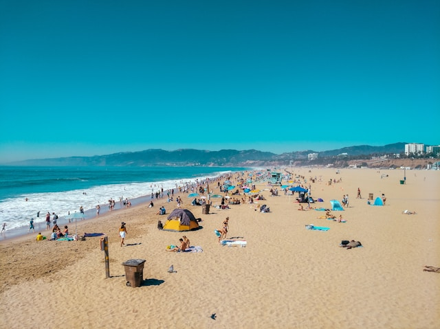

Los Angeles: Meleklerin Şehri
Los Angeles, Amerika Birleşik Devletleri'nin batı kıyısında yer alan ve Kaliforniya eyaletinin en büyük şehri olan muhteşem bir yerdir
Meleklerin Şehri olarak da bilinen Los Angeles, dünya çapında tanınan Hollywood, sıcak iklimi, plajları ve kültürel çeşitliliği ile ünlüdür
Hollywood Bulvarı, Los Angeles'in sembolik bir parçasıdır. Burası, efsanevi Walk of Fame'i ve ikonik Hollywood yazısını barındırır.
Film endüstrisinin kalbi olan bu bölgede, ünlü stüdyoları, film yapımcılarını ve yıldızları görebilirsiniz.
Ayrıca Hollywood Bowl gibi eşsiz konser mekanları da burada bulunmaktadır.
Los Angeles'in plajları da dünya çapında ün kazanmıştır.
Santa Monica Plajı, güneşin ve kumun tadını çıkarmak isteyenler için mükemmel bir mekandır.
Sahilde yürüyüş yapabilir, bisiklet sürerek gezintiye çıkabilir veya ünlü Santa Monica İskelesi'nde eğlenceli vakit geçirebilirsiniz.